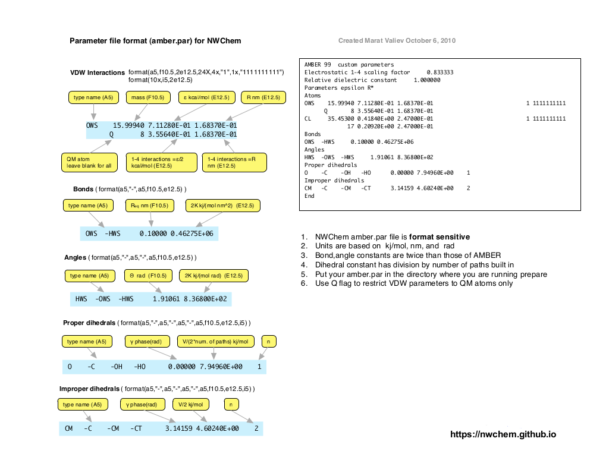

QMMM Apppendix¶
Preparing QM/MM calculations from scratch¶
Setting up QM/MM calculations for a new system for which classical force analog is not readily available would typically involve the following steps
- Generation of the proper PDB file
- Construction the fragment file(s)
- Creation of parameter file if new atom types were defined
Generation of the proper PDB file¶
It is often the case that the input structure for the system comes in the form of the xyz file. Let us take a concrete example of N3O3- molecule, which we would like to embed in classical solvent and perform QM/MM calculations. Here is the structure of just N3O3- in xyz format (generated in course of gas phase optimizations)
6
geometry
N 1.31562667 0.93574165 -0.42424728
O 1.56161766 0.18015298 -1.36827899
N 2.36373381 1.02559495 0.48834956
O 3.47240000 0.42852552 0.42137570
N 1.95804013 1.90608355 1.48799418
O 2.81393172 2.06788134 2.36142683
We cannot use this file as is in the QM/MM simulations, and it has to be converted into PDB format. This is needed even if we plan to treat this molecule quantum mechanically. There is more than way to do it. For example, we could use Babel http://openbabel.org/wiki/Main_Page, which will generate the PDB file as
COMPND geometry
AUTHOR GENERATED BY OPEN BABEL 2.3.0
HETATM 1 O LIG 1 1.562 0.180 -1.368 1.00 0.00 O
HETATM 2 N LIG 1 1.316 0.936 -0.424 1.00 0.00 N
HETATM 3 N LIG 1 2.364 1.026 0.488 1.00 0.00 N
HETATM 4 O LIG 1 3.472 0.429 0.421 1.00 0.00 O
HETATM 5 N LIG 1 1.958 1.906 1.488 1.00 0.00 N
HETATM 6 O LIG 1 2.814 2.068 2.361 1.00 0.00 O
CONECT 1 2
CONECT 2 1 3
CONECT 3 2 4 5
CONECT 4 3
CONECT 5 3 6
CONECT 6 5
MASTER 0 0 0 0 0 0 0 0 6 0 6 0
END
which after stripping nonessential information becomes
HETATM 1 O LIG 1 1.562 0.180 -1.368 1.00 0.00 O
HETATM 2 N LIG 1 1.316 0.936 -0.424 1.00 0.00 N
HETATM 3 N LIG 1 2.364 1.026 0.488 1.00 0.00 N
HETATM 4 O LIG 1 3.472 0.429 0.421 1.00 0.00 O
HETATM 5 N LIG 1 1.958 1.906 1.488 1.00 0.00 N
HETATM 6 O LIG 1 2.814 2.068 2.361 1.00 0.00 O
END
This is not yet the format we want. So what we need to do is
- replace HETATM field by ATOM preserving the format (column locations) of the rest of the file:
I would typically use sed for this purpose
sed 's/HETATM/ATOM /' n3o3-bad.pdb > n3o3-step1.pdb
where n3o3-bad.pdb is the original pdb file from Babel and
n3o3-step1.pdb is the converted one as shown below
ATOM 1 O LIG 1 1.562 0.180 -1.368 1.00 0.00 O
ATOM 2 N LIG 1 1.316 0.936 -0.424 1.00 0.00 N
ATOM 3 N LIG 1 2.364 1.026 0.488 1.00 0.00 N
ATOM 4 O LIG 1 3.472 0.429 0.421 1.00 0.00 O
ATOM 5 N LIG 1 1.958 1.906 1.488 1.00 0.00 N
ATOM 6 O LIG 1 2.814 2.068 2.361 1.00 0.00 O
END
- define residues (aka molecules):
In our case Babel did this for us and the entire system is defined as
one residue with the name LIG (see columns 4 and 5). We can leave it as,
but I will redefine residue name to NN3 (keep it to 3 characters !).
Again running sed 's/LIG/NN3/' n3o3-step1.pdb > n3o3-step2.pdb
ATOM 1 O NN3 1 1.562 0.180 -1.368 1.00 0.00 O
ATOM 2 N NN3 1 1.316 0.936 -0.424 1.00 0.00 N
ATOM 3 N NN3 1 2.364 1.026 0.488 1.00 0.00 N
ATOM 4 O NN3 1 3.472 0.429 0.421 1.00 0.00 O
ATOM 5 N NN3 1 1.958 1.906 1.488 1.00 0.00 N
ATOM 6 O NN3 1 2.814 2.068 2.361 1.00 0.00 O
END
You could have also broken it up into several residues as
ATOM 1 O NN2 1 1.562 0.180 -1.368 1.00 0.00 O
ATOM 2 N NN2 1 1.316 0.936 -0.424 1.00 0.00 N
ATOM 3 N NN2 1 2.364 1.026 0.488 1.00 0.00 N
ATOM 4 O NN2 1 3.472 0.429 0.421 1.00 0.00 O
ATOM 5 N NN1 2 1.958 1.906 1.488 1.00 0.00 N
ATOM 6 O NN1 2 2.814 2.068 2.361 1.00 0.00 O
END
where I defined two residues NN2 and NN1 (note changes in columns 4 and 5). To keep things simple I will stay with one residue version for now
- make unique atom names:
This has to do with the requirement that all atoms names have to be unique within a given residue. So if we take our one residue version it could be modified as (notice column 3)
ATOM 1 O1 NN3 1 1.562 0.180 -1.368 1.00 0.00 O
ATOM 2 N1 NN3 1 1.316 0.936 -0.424 1.00 0.00 N
ATOM 3 N2 NN3 1 2.364 1.026 0.488 1.00 0.00 N
ATOM 4 O2 NN3 1 3.472 0.429 0.421 1.00 0.00 O
ATOM 5 N3 NN3 2 1.958 1.906 1.488 1.00 0.00 N
ATOM 6 O3 NN3 2 2.814 2.068 2.361 1.00 0.00 O
END
Now we have a PDB file for our system in “proper” PDB format. Before we move to next step, I should mention that the last 3 columns are not necessary and could have been removed at any point leading to n3o3.pdb
ATOM 1 O1 NN3 1 1.562 0.180 -1.368
ATOM 2 N1 NN3 1 1.316 0.936 -0.424
ATOM 3 N2 NN3 1 2.364 1.026 0.488
ATOM 4 O2 NN3 1 3.472 0.429 0.421
ATOM 5 N3 NN3 2 1.958 1.906 1.488
ATOM 6 O3 NN3 2 2.814 2.068 2.361
END
Generation of new fragment files¶
While setting up QM/MM calculations is often necessary to generate new fragment files for the molecules that are not available as part of standard set. The IMPORTANT assumption here is that these new molecules/residues will be part of OQM region, and as a result only minimum information needs to be provided to include them in QM/MM calculations.
First we must ensure that we have a proper PDB format for our as discussed in the Generation of the proper PDB file section. As a concrete example we will start with N3O3 example that was discussed there as well
ATOM 1 O1 NN3 1 1.562 0.180 -1.368
ATOM 2 N1 NN3 1 1.316 0.936 -0.424
ATOM 3 N2 NN3 1 2.364 1.026 0.488
ATOM 4 O2 NN3 1 3.472 0.429 0.421
ATOM 5 N3 NN3 1 1.958 1.906 1.488
ATOM 6 O3 NN3 1 2.814 2.068 2.361
END
We have residue named NN3 and therefore looking to construct fragment
file NN3.frg. The best way to do it is to run a simple prepare job
start n3o3
prepare
source n3o3.pdb
new_top new_seq
new_rst
modify segment 1 quantum
update lists
ignore
write n3o3_ref.pdb
write n3o3_ref.rst
end
task prepare
This prepare job will necessarily fail because NN3.frg is not yet available:
Created fragment ./NN3.frg_TMP
Unresolved atom types in fragment NN3
**********
* 0: pre_mkfrg failed 9999
**********
As part of this process skeleton fragment file (NN3.frg_TMP) will be
generated that can be modified into the final correct form. Let us take
a look at NN3.frg_TMP
# This is an automatically generated fragment file
# Atom types and connectivity were derived from coordinates
# Atomic partial charges are crude estimates
# 00/00/00 00:00:00
#
$NN3
6 1 1 0
NN3
1 O1 0 0 0 1 1 0.000000 0.000000
2 N1 0 0 0 1 1 0.000000 0.000000
3 N2 0 0 0 1 1 0.000000 0.000000
4 O2 0 0 0 1 1 0.000000 0.000000
5 N3 0 0 0 1 1 0.000000 0.000000
6 O3 0 0 0 1 1 0.000000 0.000000
1 2
2 3
3 4
3 5
5 6
The main problem with this fragment file is that there are no atom types to be found in column 12. What atom type does is to identify what classical parameters should be assigned to it. Since, as mentioned in the beginning, we are planing to treat this residue/molecule as part of QM region, the only classical information needed is VDW parameters. We will assume that all nitrogens atoms in our molecule can use the same set of parameters, and the same for oxygens. Therefore we will define two atom types NX and OX
$NN3
6 1 1 0
NN3
1 O1 OX 0 0 0 1 1 0.000000 0.000000
2 N1 NX 0 0 0 1 1 0.000000 0.000000
3 N2 NX 0 0 0 1 1 0.000000 0.000000
4 O2 OX 0 0 0 1 1 0.000000 0.000000
5 N3 NX 0 0 0 1 1 0.000000 0.000000
6 O3 OX 0 0 0 1 1 0.000000 0.000000
1 2
2 3
3 4
3 5
5 6
and rename resulting file as NN3.frg. Please note that the overall format of the fragment file was preserved and atom types were entered starting at column 12. Rerunning the same prepare job moves as a bit further this time
modify segment 1 set 0 quantum
Parameter file /Users/marat/opt/codes/nwchem-new/src/data/amber_s/amber.par
Parameter file /Users/marat/opt/codes/nwchem-new/src/data/amber_q/amber.par
Parameter file /Users/marat/opt/codes/nwchem-new/src/data/amber_x/amber.par
Parameter file /Users/marat/opt/codes/nwchem-new/src/data/amber_u/amber.par
Undetermined force field parameters
Parameters could not be found for atom type OX Q
Parameters could not be found for atom type NX Q
**********
* 0: pre_check failed 9999
**********
complaining now that atom types OX and NX are not defined. This brings us to the next step of defining new parameter file for our calculation.
Generation of new parameter files¶
Continuing with our fragment construction in Generation of new fragment
files section, we now
need to define VDW parameters for our new atom types NX and OX. The best
way to do it is to create amber.par file in the directory where you plan
to rerun final prepare
Electrostatic 1-4 scaling factor 0.833333
Relative dielectric constant 1.000000
Parameters epsilon R*
#
Atoms
NX 14.01000 7.11280E-01 1.82400E-01 1 1111111111
Q 7 3.55640E-01 1.82400E-01
OX 16.00000 6.35968E-01 1.76830E-01 1 1111111111
Q 8 3.17984E-01 1.76830E-01
End
The format of this file is documented in Format of NWChem parameter file. How to actually choose the appropriate values for VDW parameters is a whole new subject, which I do not think anybody yet fully addressed. The practical strategy is to copy from known atom types, which are chemically similar to the ones in your system. In the case above I copied parameters from standard AMBER atom types N and OW.
Format of NWChem parameter file¶
The format of NWChem parameter is illustrated on the figure below and also available as pdf file.

Conversion of standard AMBER program parameter files¶
Fortran code that performs conversion from AMBER program parameter file
format to NWChem can be found here.
It works by parsing out free format AMBER style parameter file contained
in amber.in
MASS
C 12.01
CA 12.01
BOND
#this is a comment
C -CA 469.0 1.409 this is also a comment
C - CB 447.0 1.419
ANGLE
C -CA-CA 63.0 120.00 another comment
C -CB-NB 70.0 130.00
DIHEDRAL
X -C -CA-X 4 14.50 180.0 2. intrpol.bsd.on C6H6
X - C - CB -X 4 12.00 180.0 2. intrpol.bsd.on C6H6
IMPROPER
X -CT-N -CT 1.0 180. 2. JCC,7,(1986),230
CT -O - C -OH 10.5 180. 2.
NONBOND
CA 1.9080 0.0860
C 1.9080 0.0860
to fixed format NWChem style amber.par file
#Generated amber.par file
Electrostatic 1-4 scaling factor 0.833333
Relative dielectric constant 1.000000
Parameters epsilon R*
#
Atoms
CA 12.01000 3.59824E-01 1.90800E-01 1 1111111111
6 1.79912E-01 1.90800E-01
C 12.01000 3.59824E-01 1.90800E-01 1 1111111111
6 1.79912E-01 1.90800E-01
Bonds
C -CA 0.14090 3.92459E+05
C -CB 0.14190 3.74050E+05
Angles
C -CA -CA 2.09440 5.27184E+02
C -CB -NB 2.26893 5.85760E+02
Proper dihedrals
-C -CA - 3.14159 1.51670E+01 2
-C -CB - 3.14159 1.25520E+01 2
Improper dihedrals
-CT -N -CT 3.14159 4.18400E+00 2
CT -O -C -OH 3.14159 4.39320E+01 2
End